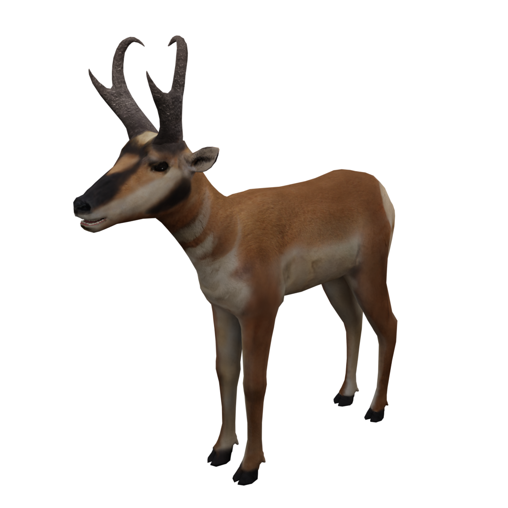
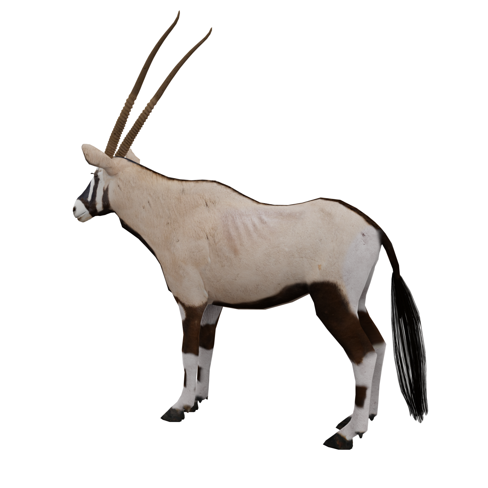
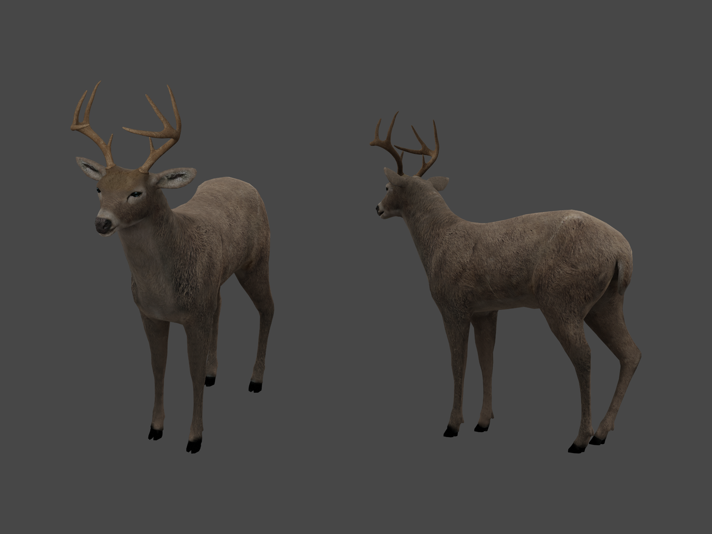
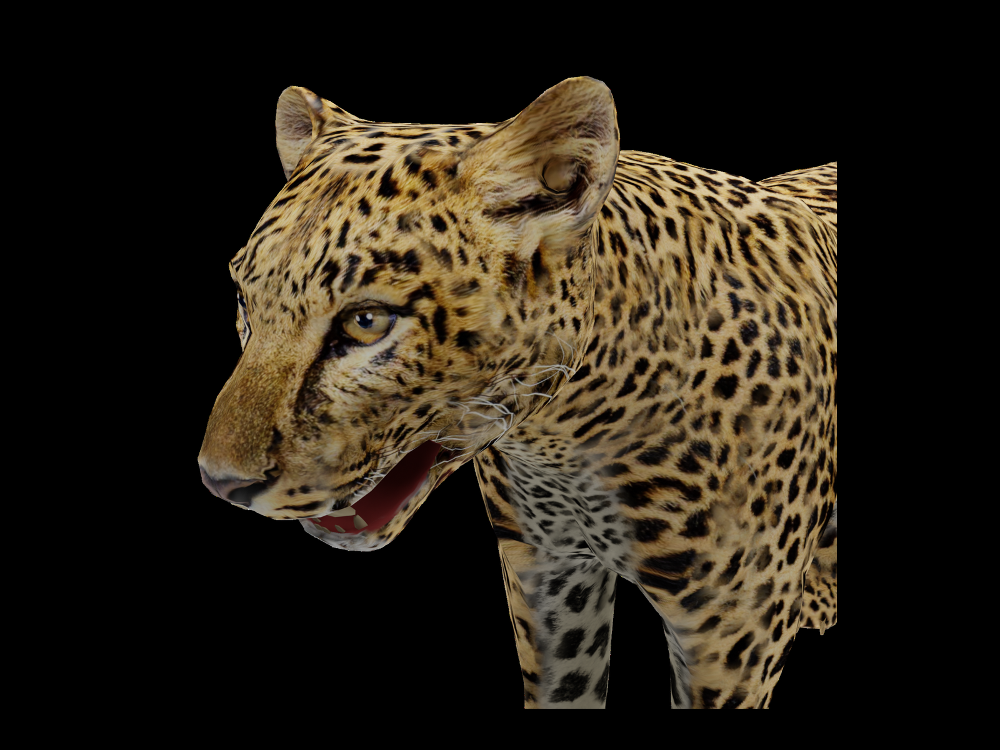
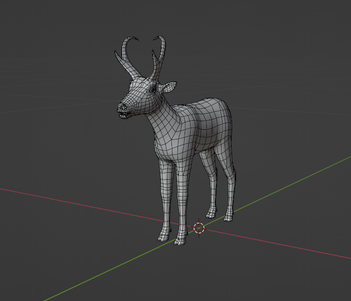
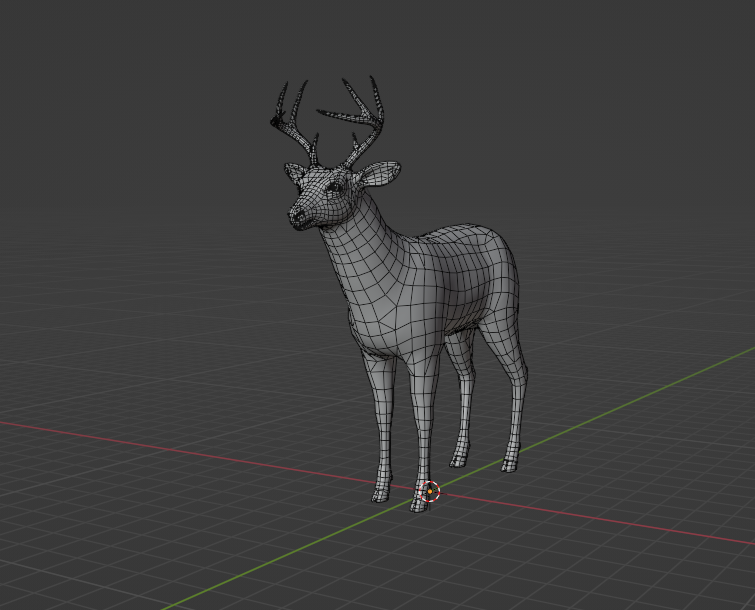
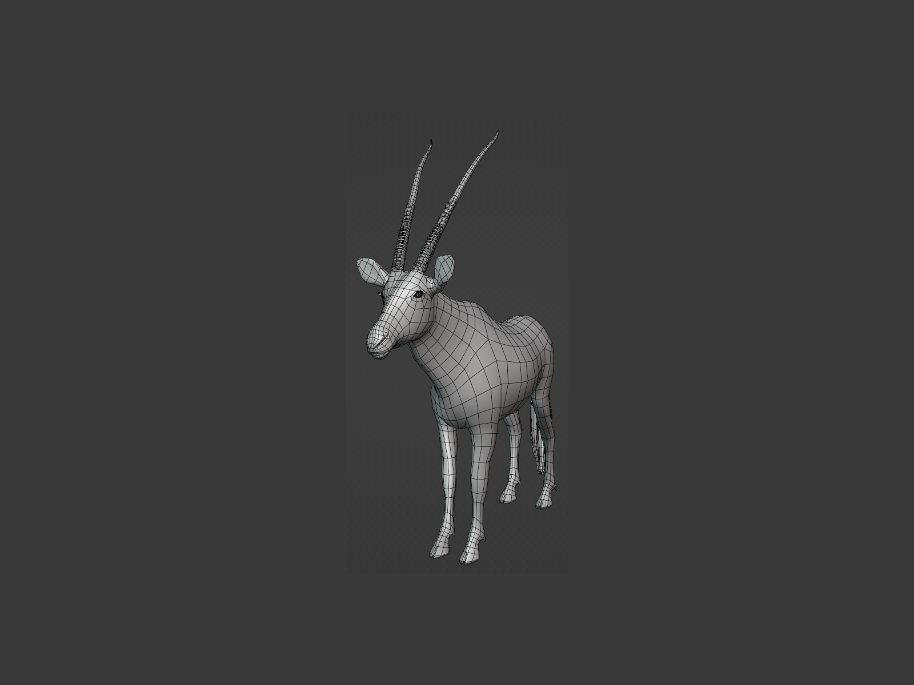
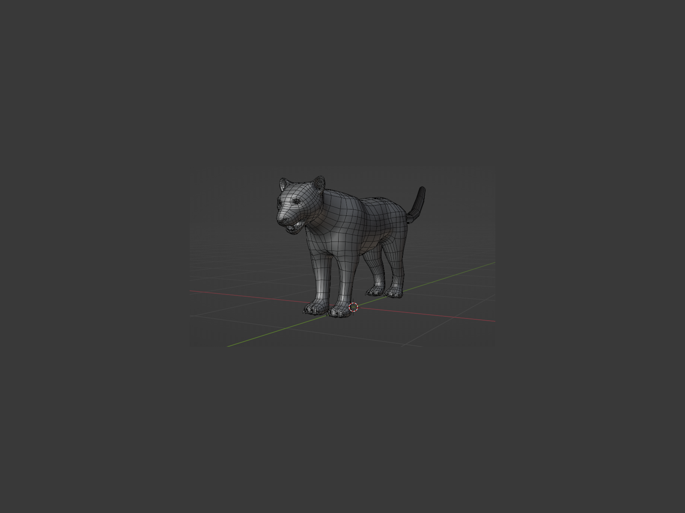

VR CREATURE ART · META QUEST
AccuBow VR
Wildlife Animals
A collection of realistic, game-ready wildlife animals created for AccuBow VR. The models were built with a low-poly budget in mind, balancing recognizable animal forms and textured surface detail with the performance needs of a VR experience.

WILDLIFE ASSET · TEXTURED RENDER
01 — ANIMAL ASSETS
Wildlife collection.
Selected textured renders showing the animal models from presentation angles. Each model averages approximately 6,000–7,000 triangles.




02 — MODELING & TOPOLOGY
Built for real-time VR.
Wireframe views show the underlying low-poly meshes and topology used to keep the animal assets within a VR-friendly triangle budget.




PROJECT OVERVIEW
Wildlife assets for VR.
The focus was on creating recognizable animal silhouettes and textured models while keeping geometry efficient for a real-time virtual reality application.
- Low-poly animal modeling and mesh optimization.
- Texturing and material setup for realistic wildlife appearance.
- Average triangle count of approximately 6–7K per animal.
- Presentation renders and topology checks in Blender.
MY CONTRIBUTION
3D art & optimization.
- Animal modeling, topology and texturing in Blender.
- Prepared optimized assets for the VR project.
- Unity integration and application development handled by the developer.
Software: Blender.